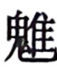

史记卷九十七
郦生陆贾列传第三十七
郦生食其 者，陈留高阳 人也。好读书，家贫落魄，无以为衣食业，为里监门吏。然县中贤豪不敢役，县中皆谓之狂生。
及陈胜 、项梁 等起，诸将徇地过高阳 者数十人，郦生 闻其将皆握 ，好苛礼自用，不能听大度之言，郦生 乃深自藏匿。后闻沛公 将兵略地陈留 郊，沛公 麾下骑士适郦生 里中子也，沛公 时时问邑中贤士豪俊。骑士归，郦生 见谓之曰：“吾闻沛公 慢而易人，多大略，此真吾所愿从游，莫为我先。若见沛公 ，谓曰‘臣里中有郦生 ，年六十馀，长八尺，人皆谓之狂生。生自谓我非狂生’。”骑士曰：“沛公 不好儒，诸客冠儒冠来者，沛公 辄解其冠，溲溺其中。与人言，常大骂。未可以儒生说也。”郦生 曰：“弟言之。”骑士从容言如郦生 所诫者。
沛公 至高阳 传舍，使人召郦生 。郦生 至，入谒，沛公 方倨床使两女子洗足，而见郦生 。郦生 入，则长揖不拜，曰：“足下欲助秦 攻诸侯乎？且欲率诸侯破秦 也？”沛公 骂曰：“竖儒！夫天下同苦秦 久矣，故诸侯相率而攻秦 ，何谓助秦 攻诸侯乎？”郦生 曰：“必聚徒合义兵诛无道秦 ，不宜倨见长者。”于是沛公 辍洗，起摄衣，延郦生 上坐，谢之。郦生 因言六国从横时。沛公 喜，赐郦生 食，问曰：“计将安出？”郦生 曰：“足下起纠合之众，收散乱之兵，不满万人，欲以径入强秦 ，此所谓探虎口者也。夫陈留 ，天下之冲，四通五达之郊也，今其城又多积粟。臣善其令，请得使之，令下足下。即不听，足下举兵攻之，臣为内应。”于是遣郦生 行，沛公 引兵随之，遂下陈留 。号郦食 其为广野君 。
郦生 言其弟郦商 ，使将数千人从沛公 西南略地。郦生 常为说客，驰使诸侯。
汉 三年秋，项羽 击汉 ，拔荥阳 ，汉 兵遁保巩 、洛 。楚 人闻淮阴侯 破赵 ，彭越 数反梁 地，则分兵救之。淮阴 方东击齐 ，汉王 数困荥阳 、成皋 ，计欲捐成皋 以东，屯巩 、洛 以拒楚 。郦生 因曰：“臣闻知天之天者，王事可成；不知 天之天者，王事不可成。王者以民人为天，而民人以食为天。夫敖仓 ，天下转输久矣，臣闻其下乃有藏粟甚多。楚 人拔荥阳 ，不坚守敖仓 ，乃引而东，令適卒分守成皋 ，此乃天所以资汉 也。方今楚 易取而汉 反却，自夺其便，臣窃以为过矣。且两雄不俱立，楚汉 久相持不决，百姓骚动，海内摇荡，农夫释耒，工女下机，天下之心未有所定也。愿足下急复进兵，收取荥阳 ，据敖仓 之粟，塞成皋 之险，杜大行 之道，距蜚狐 之口，守白马 之津，以示诸侯效实形制之势，则天下知所归矣。方今燕 、赵 已定，唯齐 未下。今田广 据千里之齐 ，田閒 将二十万之众，军于历城 ，诸田 宗强，负海阻河济 ，南近楚 ，人多变诈，足下虽遣数十万师，未可以岁月破也。臣请得奉明诏说齐王 ，使为汉 而称东藩。”上曰：“善。”
乃从其画，复守敖仓 ，而使郦生 说齐王 曰：“王知天下之所归乎？”王曰：“不知也。”曰：“王知天下之所归，则齐国 可得而有也；若不知天下之所归，即齐国 未可得保也。”齐王 曰：“天下何所归？”曰：“归汉 。”曰：“先生何以言之？”曰：“汉王 与项王 戮力西面击秦 ，约先入咸阳 者王之。汉王 先入咸阳 ，项王 负约不与而王之汉中 。项王 迁杀义帝 ，汉王 闻之，起蜀汉 之兵击三秦 ，出关而责义帝 之处，收天下之兵，立诸侯之后。降城即以侯其将，得赂即以分其士，与天下同其利，豪英贤才皆乐为之用。诸侯之兵四面而至，蜀汉 之粟方船而下。项王 有倍约之名，杀义帝 之负；于人之功无所记，于人之罪无所忘；战胜而不得其赏，拔城而不得其封；非项氏 莫得用事；为人刻印，刓而不能授；攻城得赂，积而不能赏：天下畔之，贤才怨之，而莫为之用。故天下之士归于汉王 ，可坐而策也。夫汉王 发蜀汉 ，定三秦 ；涉西河 之外，援上党 之兵；下井陉 ，诛成安君 ；破北魏 ，举三十二城：此蚩尤 之兵也，非人之力也，天之福也。今已据敖仓 之粟，塞成皋 之险，守白马 之津，杜大行 之阪，距蜚狐 之口，天下后服者先亡矣。王疾先下汉王 ，齐国 社稷可得而保也；不下汉王 ，危亡可立而待也。”田广 以为然，乃听郦生 ，罢历下 兵守战备，与郦生 日纵酒。
淮阴侯 闻郦生 伏轼下齐 七十馀城，乃夜度兵平原 袭齐 。齐王田广 闻汉 兵至，以为郦生 卖己，乃曰：“汝能止汉 军，我活汝；不然，我将烹汝！”郦生 曰：“举大事不细谨，盛德不辞让。而公不为若更言！”齐王 遂烹郦生 ，引兵东走。
汉
十二年，曲周侯郦商
以丞相将兵击黥布
有功。高祖
举列侯功臣，思郦食其
。郦食其
子疥
数将兵，功未当侯，上以其父故，封疥
为高梁侯
。后更食武遂
，嗣三世。元狩
元年中，武遂侯平
坐诈诏衡山王
取百斤金，当弃
市，病死，国除也。
陆贾 者，楚 人也。以客从高祖 定天下，名为有口辩士，居左右，常使诸侯。
及高祖 时，中国初定，尉他 平南越 ，因王之。高祖 使陆贾 赐尉他 印为南越王 。陆生 至，尉他  结箕倨见陆生 。陆生 因进说他 曰：“足下中国人，亲戚昆弟坟墓在真定 。今足下反天性，弃冠带，欲以区区之越 与天子抗衡为敌国，祸且及身矣。且夫秦 失其政，诸侯豪杰并起，唯汉王 先入关，据咸阳 。项羽 背约，自立为西楚霸王 ，诸侯皆属，可谓至强。然汉王 起巴蜀 ，鞭笞天下，劫略诸侯，遂诛项羽 ，灭之。五年之间，海内平定，此非人力，天之所建也。天子闻君王王南越 ，不助天下诛暴逆，将相欲移兵而诛王，天子怜百姓新劳苦，故且休之，遣臣授君王印，剖符通使。君王宜郊迎，北面称臣，乃欲以新造未集之越 ，倔强于此。汉 诚闻之，掘烧王先人冢，夷灭宗族，使一偏将将十万众临越 ，则越 杀王降汉 ，如反覆手耳。”
于是尉他 乃蹶然起坐，谢陆生 曰：“居蛮夷中久，殊失礼义。”因问陆生 曰：“我孰与萧何 、曹参 、韩信 贤？”陆生 曰：“王似贤。”复曰：“我孰与皇帝贤？”陆生 曰：“皇帝起丰沛 ，讨暴秦 ，诛强楚 ，为天下兴利除害，继五帝三王 之业，统理中国。中国之人以亿计，地方万里，居天下之膏腴，人众车舆，万物殷富，政由一家，自天地剖泮未始有也。今王众不过数十万，皆蛮夷，崎岖山海间，譬若汉 一郡，王何乃比于汉 ！”尉他 大笑曰：“吾不起中国，故王此。使我居中国，何渠不若汉 ？”乃大说陆生 ，留与饮数月。曰：“越 中无足与语，至生来，令我日闻所不闻。”赐陆生 橐中装直千金，他送亦千金。陆生 卒拜尉他 为南越王 ，令称臣奉汉 约。归报，高祖 大悦，拜贾 为太中大夫。
陆生 时时前说称诗书 。高帝 骂之曰：“乃公居马上而得之，安事诗书 ！”陆生 曰：“居马上得之，宁可以马上治之乎？且汤武 逆取而以顺守之，文武并用，长久之术也。昔者吴王夫差 、智伯 极武而亡；秦 任刑法不变，卒灭赵氏 。向使秦 已并天下，行仁义，法先圣，陛下安得而有之？”高帝 不怿而有惭色，乃谓陆生 曰：“试为我著秦 所以失天下、吾所以得之者何，及古成败之国。”陆生 乃粗述存亡之征，凡著十二篇。每奏一篇，高帝 未尝不称善，左右呼万岁，号其书曰“新语”。
孝惠帝
时，吕太后
用事，欲王诸吕
，畏大臣有口者，陆生
自度不能争之，乃病免家居。以好畤
田地善，可以家焉。有五男，乃出所使越
得橐中
装卖千金，分其子，子二百金，令为生产。陆生
常安车驷马，从歌舞鼓琴瑟侍者十人，宝剑直百金，谓其子曰：“与汝约：过汝，汝给吾人马酒食，极欲，十日而更。所死家，得宝剑车骑侍从者。一岁中往来过他客，率不过再三过，数见不鲜，无久 公为也。”
公为也。”
吕太后 时，王诸吕 ，诸吕 擅权，欲劫少主，危刘氏 。右丞相陈平 患之，力不能争，恐祸及己，常燕居深念。陆生 往请，直入坐，而陈丞相 方深念，不时见陆生 。陆生 曰：“何念之深也？”陈平 曰：“生揣我何念？”陆生 曰：“足下位为上相，食三万户侯，可谓极富贵无欲矣。然有忧念，不过患诸吕 、少主耳。”陈平 曰：“然。为之奈何？”陆生 曰：“天下安，注意相；天下危，注意将。将相和调，则士务附；士务附，天下虽有变，即权不分。为社稷计，在两君掌握耳。臣常欲谓太尉绛侯 ，绛侯 与我戏，易吾言。君何不交欢太尉，深相结？”为陈平 画吕氏 数事。陈平 用其计，乃以五百金为绛侯 寿，厚具乐饮；太尉亦报如之。此两人深相结，则吕氏 谋益衰。陈平 乃以奴婢百人、车马五十乘、钱五百万，遗陆生 为饮食费。陆生 以此游汉 廷公卿间，名声藉甚。
及诛诸吕
，立孝文帝
，陆生
颇有力焉。孝文帝
即位，欲使人之南越
。陈丞相
等乃言陆生
为太中大夫，往使尉他
，令尉他
去黄屋称制，令比诸侯，皆如意旨。语在南越
语中。陆生
竟以寿终。
平原君朱建 者，楚 人也。故尝为淮南王黥布 相，有罪去，后复事黥布 。布 欲反时，问平原君 ，平原君 非之，布 不听而听梁父侯 ，遂反。汉 已诛布 ，闻平原君 谏不与谋，得不诛。语在黥布 语中。
平原君 为人辩有口，刻廉刚直，家于长安 。行不苟合，义不取容。辟阳侯 行不正，得幸吕太后 。时辟阳侯 欲知平原君 ，平原君 不肯见。及平原君 母死，陆生 素与平原君 善，过之。平原君 家贫，未有以发丧，方假贷服具，陆生 令平原君 发丧。陆生 往见辟阳侯 ，贺曰：“平原君 母死。”辟阳侯 曰：“平原君 母死，何乃贺我乎？”陆贾 曰：“前日君侯欲知平原君 ，平原君 义不知君，以其母故。今其母死，君诚厚送丧，则彼为君死矣。”辟阳侯 乃奉百金往税。列侯贵人以辟阳侯 故，往税凡五百金。
辟阳侯 幸吕太后 ，人或毁辟阳侯 于孝惠帝 ，孝惠帝 大怒，下吏，欲诛之。吕太后 惭，不可以言。大臣多害辟阳侯 行，欲遂诛之。辟阳侯 急，因使人欲见平原君 。平原君 辞曰：“狱急，不敢见君。”乃求见孝惠 幸臣闳籍孺 ，说之曰：“君所以得幸帝，天下莫不闻。今辟阳侯 幸太后而下吏，道路 皆言君谗，欲杀之。今日辟阳侯 诛，旦日太后含怒亦诛君。何不肉袒为辟阳侯 言于帝？帝听君出辟阳侯 ，太后大欢。两主共幸君，君贵富益倍矣。”于是闳籍孺 大恐，从其计，言帝，果出辟阳侯 。辟阳侯 之囚，欲见平原君 ，平原君 不见辟阳侯 ，辟阳侯 以为背己，大怒，及其成功出之，乃大惊。
吕太后 崩，大臣诛诸吕 ，辟阳侯 于诸吕 至深，而卒不诛。计画所以全者，皆陆生 、平原君 之力也。
孝文帝 时，淮南厉王 杀辟阳侯 ，以诸吕 故。文帝 闻其客平原君 为计策，使吏捕欲治。闻吏至门，平原君 欲自杀。诸子及吏皆曰：“事未可知，何早自杀为？”平原君 曰：“我死祸绝，不及而身矣。”遂自刭。孝文帝 闻而惜之，曰：“吾无意杀之。”乃召其子，拜为中大夫。使匈奴 ，单于无礼，乃骂单于，遂死匈奴 中。
初，沛公 引兵过陈留 ，郦生 踵军门上谒曰：“高阳 贱民郦食其 ，窃闻沛公 暴露，将兵助楚 讨不义，敬劳从者，愿得望见，口画天下便事。”使者入通，沛公 方洗，问使者曰：“何如人也？”使者对曰：“状貌类大儒，衣儒衣，冠侧注。”沛公 曰：“为我谢之，言我方以天下为事，未暇见儒人也。”使者出谢曰：“沛公 敬谢先生，方以天下为事，未暇见儒人也。”郦生 瞋目案剑叱使者曰：“走！复入言沛公 ，吾高阳 酒徒也，非儒人也。”使者惧而失谒，跪拾谒，还走，复入报曰：“客，天下壮士也，叱臣，臣恐，至失谒。曰‘走！复入言，而公高阳 酒徒也’。”沛公 遽雪足杖矛曰：“延客入！”
郦生 入，揖沛公 曰：“足下甚苦，暴衣露冠，将兵助楚 讨不义，足下何不自喜也？臣愿以事见，而曰‘吾方以天下为事，未暇见儒人也’。夫足下欲兴天下之大事而成天下之大功，而以目皮相，恐失天下之能士。且吾度足下之智不如吾，勇又不如吾。若欲就天下而不相见，窃为足下失之。”沛公 谢曰：“向者闻先生之容，今见先生之意矣。”乃延而坐之，问所以取天下者。郦生 曰：“夫足下欲成大功，不如止陈留 。陈留 者，天下之据衝也，兵之会地也，积粟数千万石，城守甚坚。臣素善其令，愿为足下说之。不听臣，臣请为足下杀之，而下陈留 。足下将陈留 之众，据陈留 之城，而食其积粟，招天下之从兵；从兵已成，足下横行天下，莫能有害足下者矣。”沛公 曰：“敬闻命矣。”
于是郦生 乃夜见陈留 令，说之曰：“夫秦 为无道而天下叛之，今足下与天下从则可以成大功。今独为亡秦 婴城而坚守，臣窃为足下危之。”陈留 令曰：“秦 法至重也，不可以妄言，妄言者无类，吾不可以应。 先生所以教臣者，非臣之意也，愿勿复道。”郦生 留宿卧，夜半时斩陈留 令首，逾城而下报沛公 。沛公 引兵攻城，悬令首于长竿以示城上人，曰：“趣下，而令头已断矣！今后下者必先斩之！”于是陈留 人见令已死，遂相率而下沛公 。沛公 舍陈留 南城门上，因其库兵，食积粟，留出入三月，从兵以万数，遂入破秦 。
太史公 曰：世之传郦生 书，多曰汉王 已拔三秦 ，东击项籍 而引军于巩洛 之间，郦生 被儒衣往说汉王 。乃非也。自沛公 未入关，与项羽 别而至高阳 ，得郦生 兄弟。余读陆生 新语 书十二篇，固当世之辩士。至平原君 子与余善，是以得具论之。